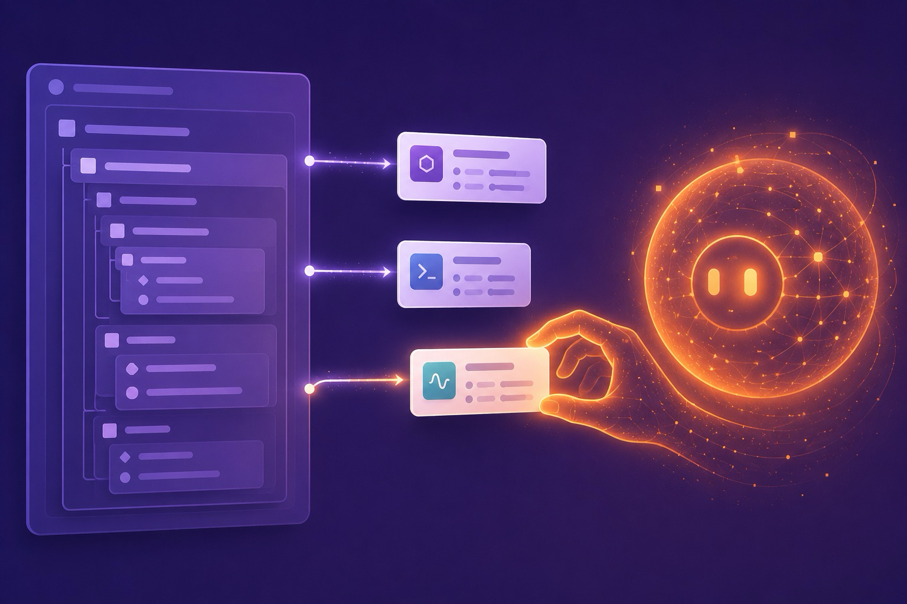

Concept 07 · LLM
Spark in the Agentic World
Here's the exciting part you came for. An LLM agent needs a precise, machine-readable catalog of what it's allowed to do. A Spark DSL is exactly that catalog — declared by humans, read by machines.
Think about what tool-calling actually demands. The model needs a list of tools, each with a name, a description, and a typed argument schema, so it can decide which to call and with what. Now recall Chapters 3 and 5: a Spark entity already has a name, a describe, and a typed schema, and an Info module hands them back as data. The shapes line up so cleanly it feels like cheating.
Real example: Ash AI's tools
Ash AI is an LLM toolbox for the Ash Framework, and — naturally — it's a Spark extension. You expose existing resource actions to a model by declaring them:
a Spark DSL block, on a domaintools do
tool :convert_to_usd, MyApp.Money.Currencies, :convert_to_usd
tool :create_product, MyApp.Shopping.Product, :create_product
end
Each tool names the tool, the resource module, and the action. Ash AI introspects that, generates the tool schema from the action's arguments, and exposes them to the model — authorization policies and type safety preserved.
Vectorization, declared
The same declarative style configures embeddings for semantic search — no glue code, just a description of what to embed and with which model:
vectorize blockvectorize do
full_text do
text fn product ->
"""
Name: #{product.name}
Description: #{product.description}
"""
end
end
attributes description: :vectorized_description
embedding_model MyApp.OpenAiEmbeddingModel
end
Prompt-backed actions
Most striking of all: an action whose implementation is a language model. The DSL says "run this with an LLM, and give it these tools" — the return type is enforced by Ash:
the action's body IS a promptaction :scan_for_products, {:array, MyApp.Types.ProductInfo} do
description "Extract products from page text"
argument :page_contents, :string, allow_nil?: false
run prompt(
LangChain.ChatModels.ChatOpenAI.new!(%{model: "gpt-4o"}),
tools: [:convert_to_usd]
)
end
Read that again: a model call, its tools, and its typed output — all expressed as data in a Spark DSL, validated at compile time like any other entity.
The Jido agent framework leans on the same idea. Drop a jido DSL block onto an Ash resource and its CRUD actions become AI-callable tools — with authorization, data layer, and types intact. Different library, identical move: declare capability, let introspection expose it to the model.

A clean, modern editorial tech illustration, flat vector with soft glow: on the left, a tidy purple "spec sheet" of nested declarative blocks; from it, three small labeled cards (each a "tool" with a name and tiny argument rows) float rightward along glowing rails into a luminous orange AI orb that is reaching back to pick one card. Cool violet-and-lavender palette with warm ember-orange highlights, generous whitespace, no real text — just suggestive shapes. Sense of a human-written declaration being read and used by a machine mind.
Generate this with your image agent, then drop the file here.
Why Spark fits LLMs so well
- Declarations are inspectable. A tool catalog you can read back out is one step from a JSON-Schema tool definition.
- Schemas are contracts. The same schema that validates human input bounds the model's arguments — fewer malformed calls.
- Verifiers are guardrails. "An agent may expose at most N destructive tools" is a compile-time rule, not a hopeful prompt.
- The BEAM is built for this. Thousands of concurrent, supervised agent processes — long-running, crash-isolated — is the runtime's native habitat.
- One uniform shape. Tools, embeddings, prompts, and policies all read the same way, so an agent system stays legible as it grows.
LLMs are happiest when your system can describe itself in structured terms. That's the whole job of a Spark DSL: turn capability into inspectable data. So Spark didn't pivot to chase AI — the agentic world simply arrived at a problem Spark was already shaped for. In the last chapter, we build that shape from scratch.
Sources
Ash AI announcement & docs (Alembic; Elixir Merge); tools/vectorize/prompt-backed-action syntax; Jido 2.0 & Ash-Jido integration notes; Spark docs.